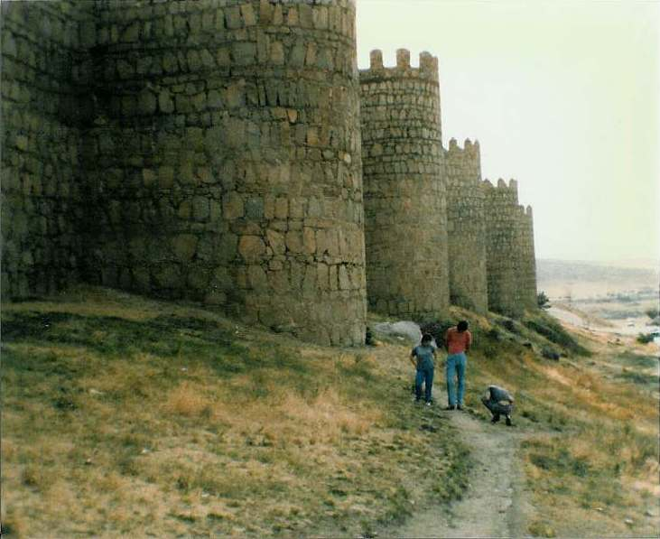

Inter Rail 1986 Day 13
Thursday 4th September 1986
Woke up to find that Jon, who had moved to the next department following the departure of the yucky types, had lost or had stolen his watch. Sulks all around. Arrived at Madrid Chamatin station at 10.15am. It was like arriving at an airport. The station building was fantastic, very modern.

It took us ages to work out which train we wanted that would take us to Ávila de los Caballeros. We decided that as we had a bit of time we'd try and change some money and report Jon's watch. We succeeded in doing neither and caught the 11.10 train by the skin of our teeth with Jon desperately holding doors open and me being hauled in as the doors shut and the train moved off. It couldn't have been any closer.
It was a bit of a slow train to Ávila but the views were gorgeous as we passed through mountains on all sides. Ávila is the highest city and provincial capital in Spain and the centre is entirely enclosed by walls. These fortifications have 82 semicircular towers and nine gates and are the most complete in Spain. The Hollywood movie "The Pride and the Passion" was all about getting an enormous cannon to Ávila.
The city is dedicated to Saint Theresa of Ávila, the 16th century Carmelite reformer, as she was born there apparently. It is also the burial place of the Grand Inquisitor Torquemada. All of this means Avila was added to the World Heritage List in 1985. Got there at 14.17 and using the map I acquired at the Madrid station tourist office we found our way to the Ávila tourist office where they told us where to get cheap accommodation.
Booked into an F (lowest grade) for 600 Pts or £3 each. We went out whilst she made up the beds and eat some very stale food after which we treated ourselves to a Coke. Back at the room Jon and Roger crashed out whilst Eli showered. I went back out at sat in the local square in the sun for a while before heading back to the bar where Eli joined me for a beer.
At 6 o'clock we got Jon and Roger up and went for a walk. The cathedral was very gothic but we couldn't get up to the top of the tower to see the views. Headed instead to the signposted View Panoramic which took us across a dried up river bed from where we could take pictures of the walls and we then walked around the walls to get back into the city. As usual with it being Spain we couldn't eat until 9pm so, after finding a lovely floodlit fountain and having my photo taken with a concrete pig (an Iberian symbol apparently), we headed back to base to try and sort out our future days plans.
We decided that if Roger wanted to be home late Saturday night he had to leave the following day and also that it had to be from Madrid in order to arrive anywhere at anything like a sensible time. Tried to sort out our plans over a meal but didn't really decide anything exept that we would catch some train in the morning back to Madrid. Roger would leave from there and after waving him off we would probably go overnight to Barcelona without having to pay the Talgo supplement. Got some sleep but it was a bit disturbed.
 Ávila Ávila |